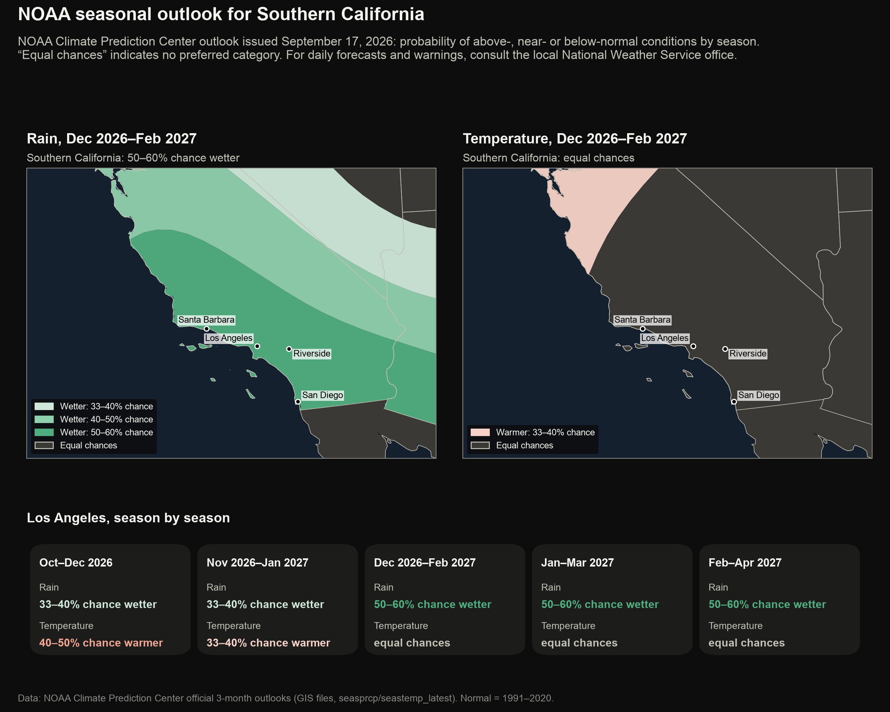

Southern California
El Niño and Southern California: outlook and historical context
NOAA's seasonal outlook for the coming months, precipitation during past ENSO phases at four Southern California stations, and summer temperature extremes since 1950.

![Bar chart of every Los Angeles rainy season since 1951 as a percent of normal, coloured by El Niño or La Niña strength, and dot plots for Los Angeles, San Diego, the Inland Empire and Santa Barbara. Los Angeles: 6 of 7 strong El Niño seasons wetter than normal, median 147%; San Diego: 6 of 7 strong El Niño seasons wetter than normal, median 145%; Inland Empire: 4 of 6 strong El Niño seasons wetter than normal, median 113%; Santa Barbara: 3 of 5 strong El Niño seasons wetter than normal, median 104%.](img/02_socal1_rain.png)

El Niño and wildfire
The influence of El Niño on Southern California wildfire is indirect. Above-normal winter precipitation typically reduces fire activity during the wet season but increases the growth of grasses and fine fuels, which cure during the following summer and autumn and can elevate the potential for rapidly spreading grass fires. There is no robust relationship between ENSO and Santa Ana wind events, which drive the largest autumn fires. Fire danger on a given day depends on wind, humidity and fuel moisture; official fire-weather products should be used for decisions.
Official forecasts and warnings
- Day-to-day weather, heat and Red Flag (fire weather) warnings: NWS Los Angeles/Oxnard · NWS San Diego
- Wildfire outlooks for Southern California: Predictive Services, South Ops
- Active fires and evacuations: CAL FIRE incidents
- Heat safety: National Weather Service
- Seasonal outlook maps for the whole US: NOAA Climate Prediction Center